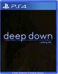
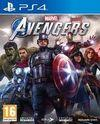

LO ULTMO EN JUEGOS DE PS4
Deep Down

Deep Down es el videojuego de rol y aventuras en tercera persona con componente online desarrollado por Capcom bajo la supervisión de Yoshinori Ono y Teruki Miyashita. Ambientado en un mundo futurista, concretamente en la Nueva York del año 2094, el título nos invitará a encarnar a una serie de jugadores que se conectan a un potente programa de realidad virtual que traslada a los usuarios a un mundo de fantasía enmarcado dentro de la época medieval. Diseñado para PlayStation 4 y con opciones online, su desarrollo sigue siendo un misterio.
Género: Acción / Simulador espacial Fecha de lanzamiento: Año 2020
Marvel's Avengers

Marvel's Avengers es un videojuego de acción y aventura para un jugador con opciones de cooperativo online que nos invitará a encarnar a los héroes más poderosos de la Tierra. Desarrollado por Square Enix, Crystal Dynamics y Eidos Montreal, el título nos llevará a encarnar a los célebres personajes deMarvel como Thor, Capitán América, Hulk, Iron Man o la Viuda Negra a lo largo y ancho de un mundo en continua expansión.
Género: Aventura de acción Fecha de lanzamiento: Año 2020